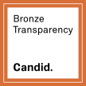
Getting started
Basic org info and IRS data confirmed.
Case study · 2023 – 2025 · Candid
Redesigning Candid's Seal of Transparency earning experience: turning a multi-step compliance form into a motivational experience for nonprofits to tell their story.
Candid's edge over competitors is the data that comes straight from nonprofits themselves, making it richer and more up to date. The Seal of Transparency is a Bronze-to-Platinum badge that recognizes nonprofits who share their work and story with donors and funders. They earn it through the Profile Data Program (PDP).
Task: Make it easy for organizations to enter their profile information and feel motivated to earn and level up their Seal of Transparency.

Basic org info and IRS data confirmed.
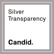
Financials and leadership added.
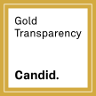
Strategic plans and DEI info included.
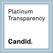
The most trusted nonprofits (renewed annually).
Impact post-launch
The dominant interaction: nonprofits actively tracking their standing.
Users returning to update and improve: 3 publishes per active user on average.
Jan 2025 – May 2026.
01 · The Problem
GuideStar (Legacy) → Candid Search (PDP)
This sytem existed in the legacy platform GuideStar where the fields were scattered across disconnected tools, progress was hard to track, and publishing required so many steps that users would abandon before finishing. The new PDP streamlines the entire flow with clearer structure, fewer steps to publish, and enough context throughout so nonprofits understand what they're working toward.
GuideStar legacy images
Four frictions kept surfacing across user interviews and support tickets:
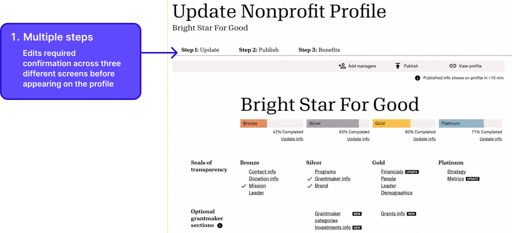
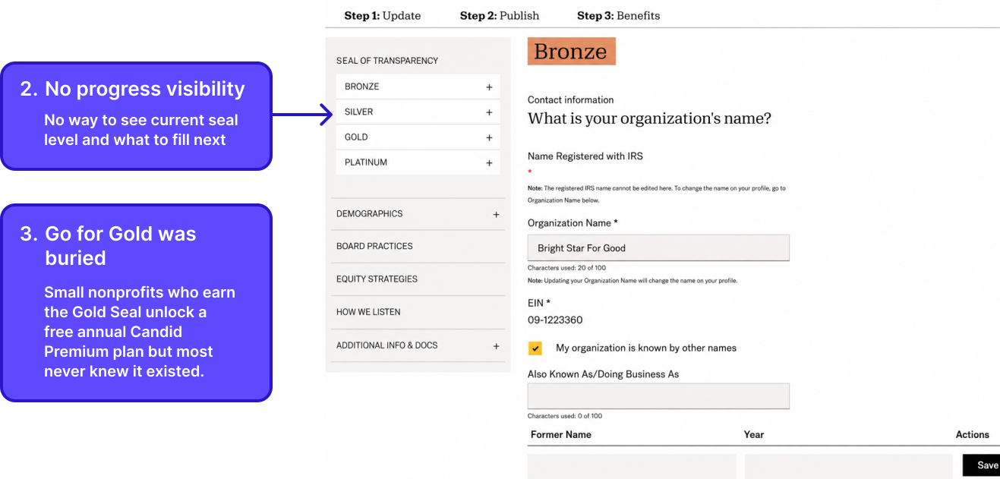
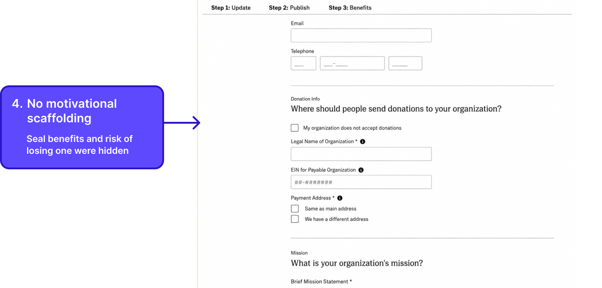
Reframe: Users weren't disengaged only because the system was hard to fill out and publish, the experience gave them no reason to push through it.
02 · Research
We ran user interviews with nonprofit administrators before designing anything. The finding that changed everything: people weren't stuck on usability, they were missing motivation.
The brief shifted from "how do we reduce friction" to "how do we create motivation." That reframe is what made everything that followed possible.
Who I was designing for
One or two people managing the org's public presence alongside many other responsibilities. The seal matters only when they understand what it signals to donors and funders.
The Go for Gold program gives free premium access, but only if they can find it. Discovery was as much a design problem as usability.
Seals expire if information isn't updated. This user returns yearly with a specific task. The design needed to surface what lapsed and make re-verification feel fast, not like starting over.
How might we make earning a Candid Seal feel like an achievement, not a chore?
If we surface progress, surface stakes, and remove cross-system friction, users will treat the seal as something worth pursuing, not just something they have to do.
03 · How the design evolved
The design evolved in response to what users said and did and it reshaped how I thought about motivation.
The first version kept editing inline on the public profile where clicking any section opened a modal window editor. The intent was to keep users oriented by letting them see their public profile and edit it in the same place.
Finding
Scope creep:
The implementation was too complex for the engineering
team to build within the timeline, so the editing
architecture had to change.
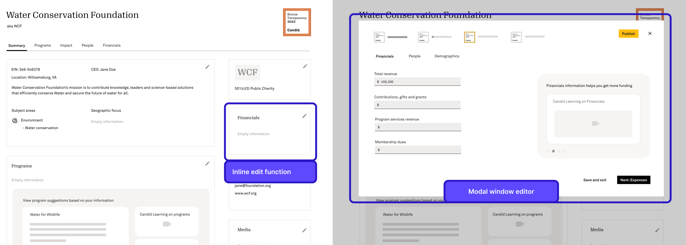
The hypothesis was that a guided tour would reduce friction and help users move through the seal-earning process with less confusion.
Finding from usability testing
Guided Seal review banner:
4 out of 5 users did not notice this banner at all.
Guided tour:
Users wanted more control over what to fill out vs a
linear guided tour.
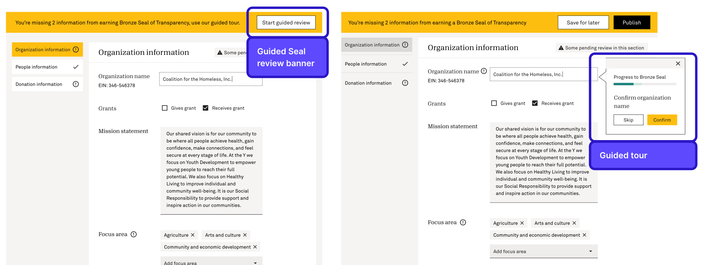
Between the V1 failure and the V2 explorations, I looked outside the product entirely and studied how Duolingo drives retention. Three mechanics stood out: progress is always visible, the next milestone always feels close, and streak loss creates urgency to return.
I mapped each directly onto the seal system. The completion bar triggers the near-completion effect. The field checklist makes the next step specific and actionable. The seal expiration warning mirrors streak-loss anxiety. These patterns became the foundation for everything that followed.
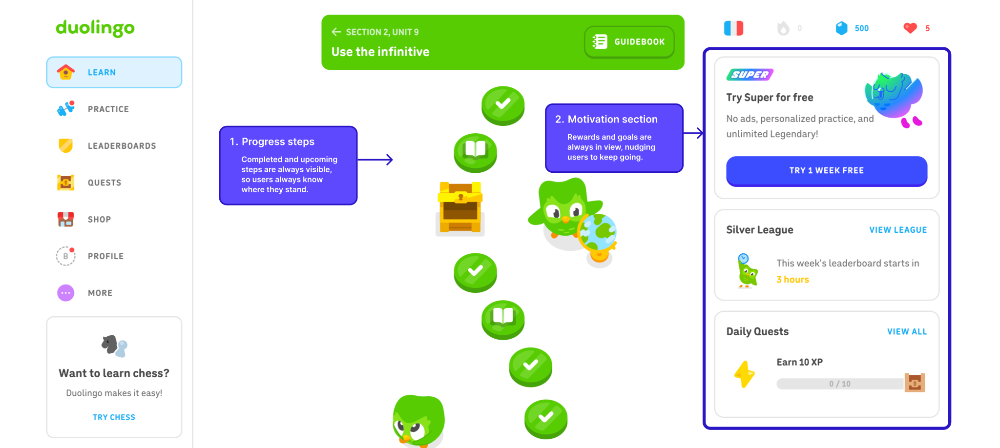
Early explorations showed all four seals in a simple sidebar list with required fields as text. While completed fields were checkmarked, there were no progress bars or percentages to show how close users were to the next seal level.
Finding
Testing revealed the gap between current and next felt unclear. Users could see what was done, but not how much further they had to go.
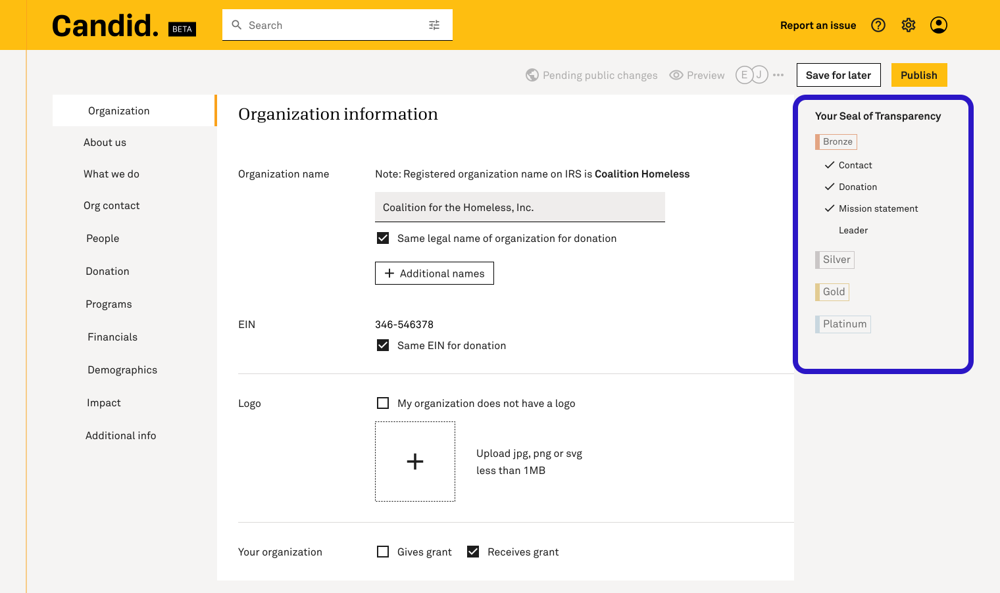
Each field within a seal tier now showed a completion status: Completed, Incomplete, or Review. Users knew exactly what to act on next. The "Earn Bronze Seal" CTA appeared for the first time, giving the sidebar a clear endpoint and anchoring progress to a concrete action.
Finding
Showing all four seals at once made the sidebar too long to scroll through. Statuses on each field made the sidebar look busy and overwhelming.
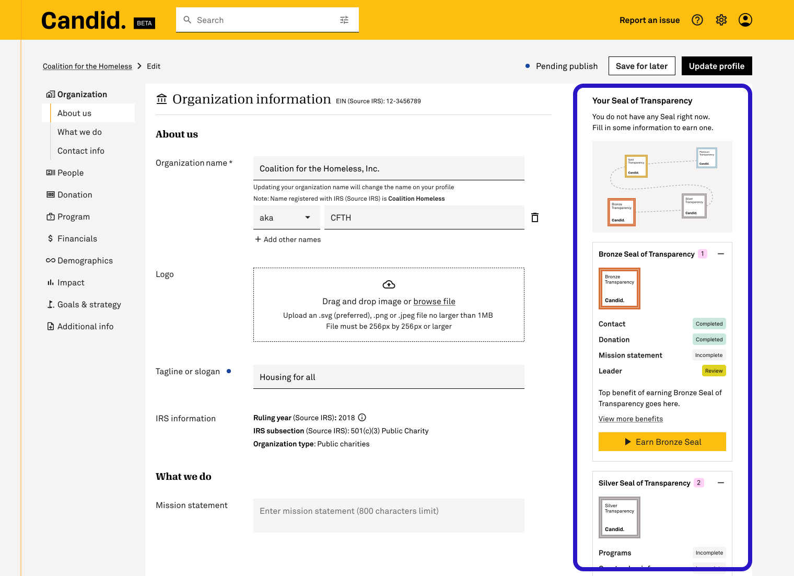
This version kept all four seal tiers visible at once, each showing their required fields and a CTA to earn the next seal. All seals and their fields were always in view, addressing the scroll issue from V3.
Finding
It was decided that more required fields were to be added to each tier, the sidebar couldn't contain it all. A more scalable approach was needed.
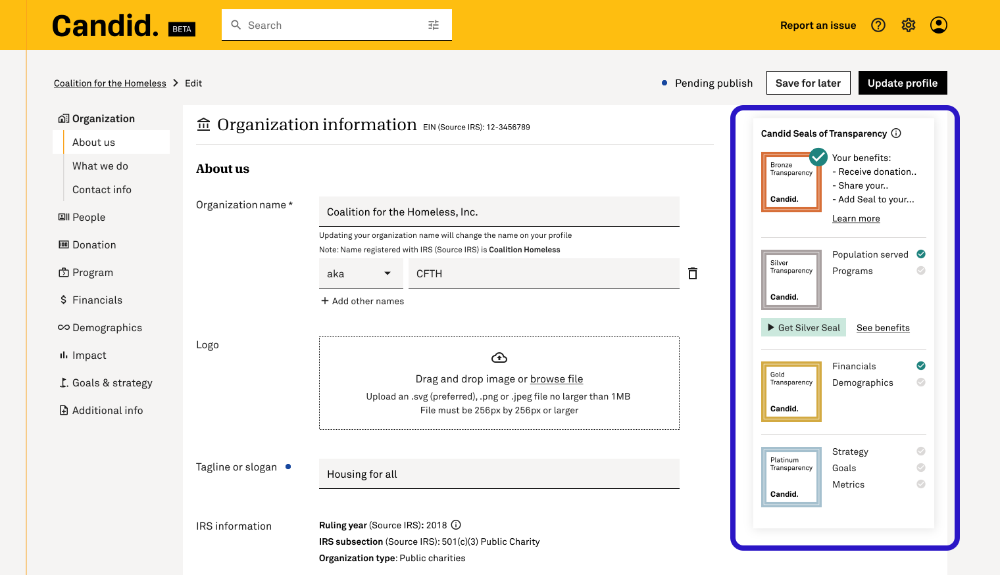
Adding percentage bars to each seal tier directly applied the near-completion effect. Users seeing 45% don't think "55% remaining." They think "I'm almost halfway there." The sidebar now showed current seal status, completion percentage, and a "See all required fields" link that expanded into a full checklist. Together, these gave users everything they needed to feel progress, understand the goal, and stay motivated to return.
Usability test validated
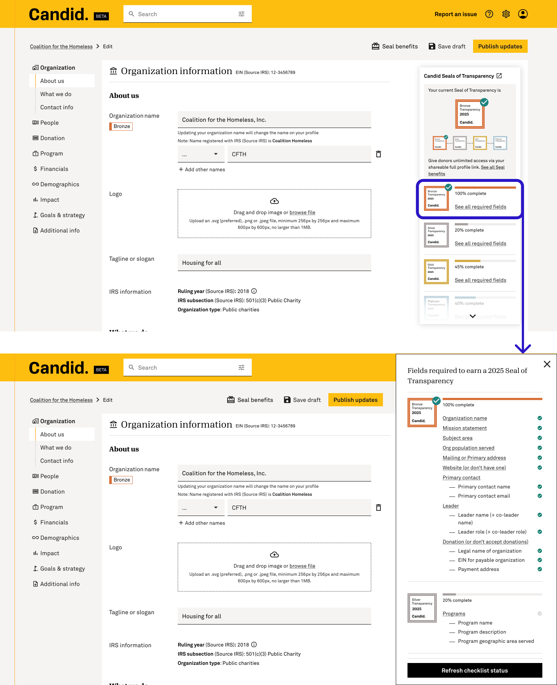
04 · Design decisions
Each choice is traceable to a research finding or a failed test you just read about. Together they transformed the experience from a form into a progression system.
In the old GuideStar flow, users had no idea what seal level they currently held while editing, that information lived elsewhere. Surfacing all four seals directly in the editing interface reframed the task from "filling out a form" to "progressing toward something."
A checklist panel below the seals shows every required field with a checkmark if complete, empty if not. Users can see exactly what one action would move them forward. The path to the next level was visible for the first time.
Even with the checklist, users needed to feel momentum, not just see unchecked boxes. A completion percentage bar under each seal makes filling a single field visibly move the needle, applying Duolingo's near-completion effect.
· The shipped experience
A GuideStar profile that felt like a compliance form vs. a Candid editing surface built around earning. Same task, a fundamentally different relationship to it.
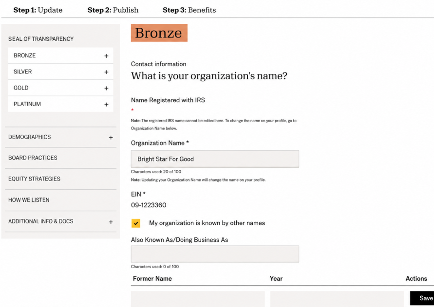
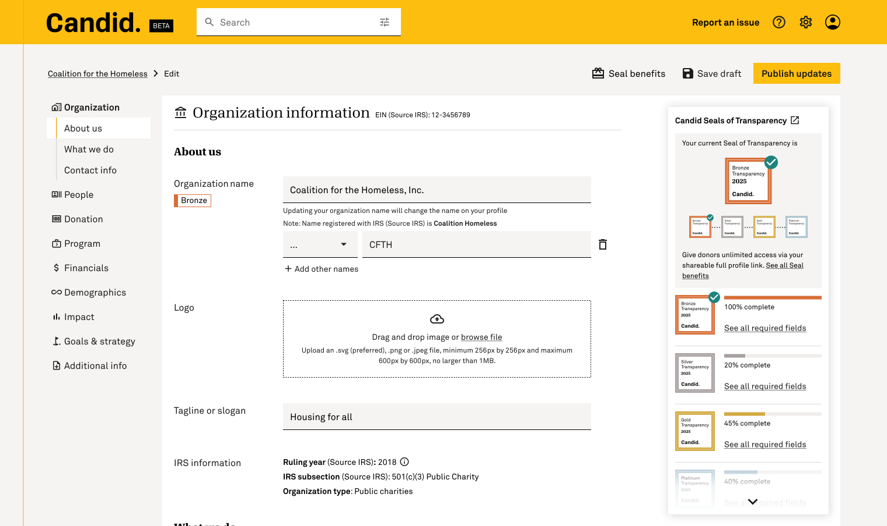
| Metric | GuideStar (before) | Candid PDP (after) | Change |
|---|---|---|---|
| Steps to publish one field update | 5+ steps across 2 systems | 1 step, single surface | −80% friction |
| Seal visibility in editing flow | Not shown: external to the form | Persistent, real-time, inline | New capability |
| Go for Gold discovery | Page existed but unfindable, outreach via email | 1.38M eligibility checks post-launch | Surfaced from zero |
| Avg. publish events per active user | - | 3.0 publishes per active user | Returning behavior |
| Unique users engaged (Jan 2025 – May 2026) | - | 189K | + scale |
· In their own words
Along with 5 star reviews, following are the user's feedbacks in their own words from the post-launch survey.
What aspects stood out to you?
The ease.
What aspects stood out to you?
It was an easy and logical process
What aspects stood out to you?
Intuitive interface, quick responsiveness.
What aspects stood out to you?
Easier process
How did it improve your experience?
Confirming what I needed to complete
What aspects stood out to you?
Truth, ease, authenticity, TRUST
How did it improve your experience?
Record keeping, fact finding and then implementing the seal
What aspects stood out to you?
How easy the portal was to use
How did it improve your experience?
Adding all the information to earn each seal.
What aspects stood out to you?
The trust it builds with our donors.
How did it improve your experience?
It's a way for donors to verify our impact.
What aspects stood out to you?
It is very user friendly for a non-tech person like myself.
How did it improve your experience?
Nothing specific. It is just easy to use.
What aspects stood out to you?
I loved that previous info is saved so you can edit with new info
How did it improve your experience?
Less time spent
What aspects stood out to you?
Easy to use and help to communicate with others. Being transparent.
How did it improve your experience?
We love Candid Thank you for what you do!
What aspects stood out to you?
ease of use. quick response time.
How did it improve your experience?
When I entered new info it reported back in real time that it was accepted
What aspects stood out to you?
i liked being able to click the box on the right and it took me to exactly where I needed to review something
What aspects stood out to you?
The transparency seals are a great way for our foundation to demonstrate our trustworthiness. The webinars are very informative.
What aspects stood out to you?
The seal renewal process was very easy to navigate.
How did it improve your experience?
It utilizes a user friendly set up and gives you real time updates on items that need to be completed for each seal level.
What aspects stood out to you?
Help our donors and sponsors to trust the organization by providing transparency information.
How did it improve your experience?
Making sure they are aware of what we do, how we work with their support and donations.
What aspects stood out to you?
Straightforward instructions on how to reapply for the platinum seal of transparency, options to upload photos and videos, and the seal tool kit and benefits sheet.
How did it improve your experience?
It made it very easy for us to add the seal to our website and language to share on social media.
What aspects stood out to you?
We are able to use the seal on our website and correspondence. The seal acts as a "shorthand" for trustworthiness. It shows that when it comes to transparency, our organization is among the top tier of nonprofits. It provides us a standardized method to assure our information is up to date.
How did it improve your experience?
It eliminates their need to do homework on our organization. This facilitates trust.
05 · Impact
The hypothesis was that making progress visible and stakes tangible would turn passive form-fillers into motivated participants. Analytics from post-launch tells us it worked, and the pattern of engagement is exactly what we designed for.
The most-used event in the entire system at 69% of all PDP interactions. This isn't passive browsing, it's users actively checking their standing. Before the redesign, this information didn't exist in the interface at all.
Nonprofits who completed at least one profile update after launch, averaging 3 publish events per active user.
Users proactively opening the seal benefits panel. Moved out of help docs and into the flow at the moment of decision.
Nonprofits embedding their seal on their own website, that's not a form completion, that's ownership.
Small nonprofits discovering free premium access at the moment it was relevant to them.
Users engaging with the risk of losing their seal, confirming that surfacing stakes changed how seriously people treated maintenance.
Users returning repeatedly to improve, proving the motivation design created ongoing engagement.
Nonprofits across the US and internationally, from the Philippines to Puerto Rico to the UK, actively engaging post-launch.
· Press
Public posts from nonprofits across bronze, silver, gold, and platinum, downstream proof that the seal still travels as news.
…and many more organizations